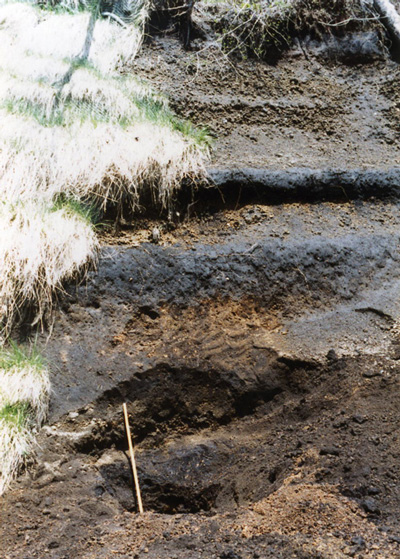
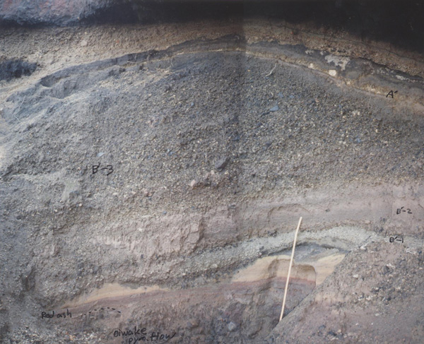
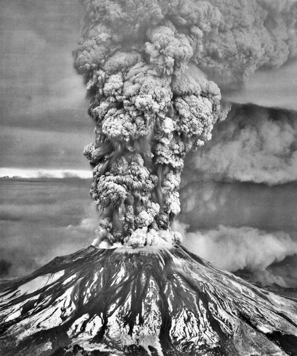
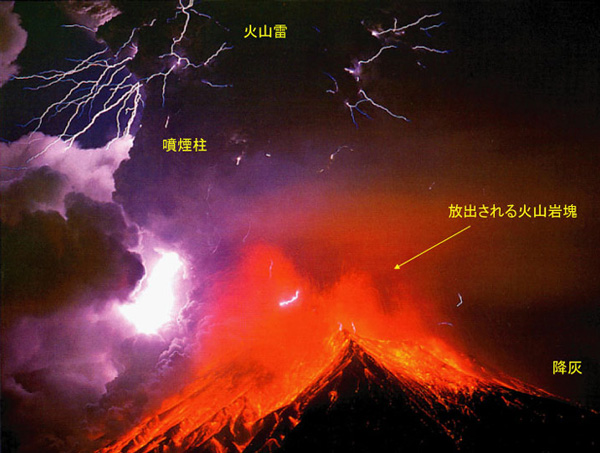

浅間前掛火山の地質と噴火史
Geology and Eruptive History of Asama-Maekake Volcano
高橋正樹・安井真也・竹本弘幸（日本大学文理学部地球システム科学教室）
2.浅間前掛火山の噴火様式と噴火史
Eruption Style and Eruptive History of Asama-Maekake Volcano
2-1 噴火規模・噴火様式と降下火砕堆積物
図2-1は浅間前掛火山の東麓にみられる降下軽石層である．白っぽい色の降下軽石層は上位から天明大規模噴火(18世紀)，天仁大規模噴火(12世紀)，古墳時代大規模噴火（4世紀）、そしてそれ以前のプリニー式大規模噴火時のものである．間に挟まる黒色の火山性土壌層は土壌および火山砂からなる．黒色火山性土壌層は噴火の静穏期あるいは噴火は生じていても大規模噴火がみられなかった時期を代表している．プリニー式大規模噴火時には、噴煙から大量の軽石が降下するとともに火砕流が発生し，火口付近には溶結火砕丘が形成されて，その一部は火砕成溶岩として流下する．浅間前掛火山の山体はこうした大規模噴火のたびに成長を繰り返してきた．

図2-1 浅間前掛火山東麓にみられる降下軽石層と挟在する黒色火山性土壌層（土壌および火山砂）．最上部の黒色火山性土壌層の上位に植生に隠れて18世紀の天明降下軽石層（As-A）がある．最上部の黒色火山性土壌層の下位が12世紀の天仁降下軽石層（As-B），その下の黒色火山性土壌層の下位が古墳時代（四世紀）の降下軽石層（As-C）である．その下位には黒色火山性土壌層を挟んで3枚の降下軽石層がみられ，上位より順にD降下軽石(As-D)，六合降下軽石，藤岡降下軽石に対比される．スケールは1m．
図2-2は浅間前掛火山北東麓における12世紀の天仁大規模噴火および18世紀の天明大規模噴火の噴出物の重なりを示した写真である．大部分を占めるのは天仁大規模噴火の噴出物である．最下位の岩片を含む層が追分火砕流堆積物で、その上位に成層した赤色および淡桃色火山砂層がのる．火山砂層の上位は侵食されて凹凸面が形成されている．これらを覆って黒色および灰色火山砂層，厚さ20cm程度の降下軽石層（B’-1），厚さ40cm程度の淡褐色火山砂層（B’-2），厚さ1m以上の降下軽石層（B’-3）が堆積している．最下部の火砕流の堆積には数日程度，その上位の火山砂層の堆積には数年以内程度，その上位の侵食面の形成には1年以内程度，さらに上位の降下軽石・火山砂・降下軽石層の堆積には数ヶ月以内程度の時間を要しているものと推定され，すべてを合わせても数年以内程度の比較的短期間での断続的な噴火活動の産物であると考えられる．
この上位には，降下軽石層を侵食した面に土壌および火山砂を含む黒色火山性土壌層が堆積している.この黒色火山性土壌層には薄い降下軽石層（As-A’）が含まれている．この黒色火山性土壌層の上位に天明大規模噴火時（西暦1783年）の降下軽石堆積物が載り，それをさらに土壌と火山砂からなる黒色火山性土壌層が覆っている． 天明と天仁の噴出物の間にある厚さ30cm程度の黒色火山性土壌層は670年程度の比較的噴火活動が静穏な時期に堆積したものである．厚さの厚い大規模噴火堆積物と比べると厚さは薄いが，形成時間ははるかに長いことになる．こうした静穏期にも浅間前掛火山は活発なブルカノ式噴火を行っていたとする古記録が残されているが，その噴出物である火山砂は，この厚さの薄い黒色火山性土壌層中に含まれている．浅間前掛火山の場合，ブルカノ式噴火の堆積物は，地層としてはほとんど残されない程度のものであることがわかる．

図2-2 浅間前掛火山北東麓における天仁(12世紀)および天明（18世紀）噴出物．下から追分火砕流堆積物，赤色～淡桃色火山砂層，軽微な不整合，黒色～灰色火山砂層，降下軽石層（As-B’-1），淡褐色火山砂層（As-B’-2），降下軽石層（As-B’-3）， 不整合，土壌と火山砂からなる黒色火山性土壌層（薄いAs-A’降下軽石層を挟む），天明降下軽石層，土壌と火山砂からなる黒色火山性土壌層の順に重なる．スケールは１ｍ．
2-2 プリニー式（準プリニー式）噴火とは
プリニー式噴火とは，噴煙柱が20kmから30kmにまで達する大規模な激しい噴火である．プリニー式噴火では、しばしば噴煙柱が崩れて規模の大きい火砕流が発生する．たなびいた噴煙の下には大量の軽石や火山灰が降下する．火砕流は10km以遠にまで到達することも珍しくない．噴煙の噴出が連続して数時間におよぶこともある．図2-3は1980年のアメリカ合衆国西部セントヘレンズ火山の噴火時の写真である．噴煙の最大高度は26kmを越えており，8時間余りにわたって10km以上の高度を持続した．浅間前掛火山天明大規模噴火時には，噴煙高度は最大で18kmを越えていたものと推定されている．プリニー式噴火は広範囲に大きな火山災害をもたらす．降下軽石・火山灰，火砕流，溶岩流などによる災害が主なものであるが，冬季積雪時に高温の噴出物で雪が融けて発生する融雪泥流や大量に堆積した火山灰や軽石に由来する火山泥流（ラハール）などの2次的な災害にも注意が必要である．

図2-3 アメリカ合衆国西部セントヘレンズ火山1980年噴火時の噴煙柱．撮影：アメリカ合衆国地質調査所．
2-3 ブルカノ式噴火とは
ブルカノ式噴火は爆発的な噴火で，1回の噴火の持続時間は数分以内と短い場合が多い．噴煙柱の高度もプリニー式噴火には及ばない．また，噴出物の量も多くはない．図2-4はブルカノ式噴火を繰り返す活動的な火山である桜島火山の噴火例である．夜間に撮影されたもので，ブルカノ式噴火の特徴がよく現れている．高く上昇した噴煙からは火山灰が降下する．噴煙は勢いのよい上昇流なので，雷雲と同様雷（火山雷）が発生する．一方火口からは爆発によって火山岩塊（噴石）が放物線を描くようにして放出される．ブルカノ式噴火の火山災害としては，噴煙から降る降下火山灰（火山砂），小規模な火砕流，火口から放出される火山岩塊(噴石)，爆発的噴火に伴う空振，また冬季の積雪時には融雪泥流などがある．噴火が連続し大量の火山灰等が山腹に堆積した場合には，雨季に土石流が発生することが多い．浅間前掛火山の場合，小規模な火砕流や大型の噴石は，火口から5km程度以内に近づかなければまず心配はない．最も警戒すべきは冬季の融雪泥流であろう．
ブルカノ式噴火は，桜島火山でよく研究されており，その特性はかなりの程度明らかにされている．噴火活動が活発になると火口底が上昇し，不活発になると下降する．噴火にともなって，火口底にはしばしば溶岩塊が形成されるが，噴火によって破壊されその消長を繰り返す．噴火が活発化し火口底が上昇すると，噴火にともなって大型の噴石が遠くまで到達するようになる．浅間前掛火山のブルカノ式噴火もほぼ同様の噴火であり，研究の進んでいる桜島火山から学ぶべきことは多いものと思われる．

図2-4 桜島火山のブルカノ式噴火．「空から見る日本の火山」より．撮影：西井上剛資
2-4 浅間前掛火山の大規模噴火史
浅間前掛火山の活動が開始されたと考えられる1万年前以降，少なくとも13枚の降下軽石層が確認されている．これは，大規模噴火が13回起きたことを示しており，1万年間で考えるとおよそ770年に一回の割合で大規模噴火が生じたことを意味する．最初の1500年間はブルカノ式噴火が卓越する比較的静穏期で少なくとも5枚の火山砂・火山礫層が認められる．およそ8500年前頃に最初の大規模噴火が生じて降下軽石層が形成された．その後7000年前頃までの間に，藤岡降下軽石(Fo)と熊川降下軽石(Km)が噴出し，さらに1500年程度の静穏期があった．この静穏期を示す黒色火山性土壌層中には約6300年前の南九州起源のアカホヤ火山灰(Ah)が含まれる．この藤岡降下軽石と熊川降下軽石の噴出した時期を第1期の大規模噴火活動期とする．静穏期の後、およそ1500年間に5回（300年に1回の割合）の大規模噴火があった．この時期を第2期の大規模噴火活動期とする．第2期で最も大きな噴火は5500年前の六合降下軽石(Kn)の噴出である．六合降下軽石の上部は主に北北東方向に堆積している．第2期最後の噴火は約4000年前頃のD降下軽石の噴出である．
その後ブルカノ式噴火が卓越する2500年近い比較的静穏期の後，4世紀古墳時代の大規模噴火（C降下軽石：As-C）があった．さらにブルカノ式噴火が断続する700～800年ほどの静穏期を経て12世紀の天仁大規模噴火(B降下軽石：As-B)が，続いてブルカノ式噴火が断続する780年近い静穏期を経て18世紀の天明大規模噴火(A降下軽石：As-A)が生じ，その後ブルカノ式噴火を繰り返しながら現在に至っている．これを第3期大規模噴火期とよぶことにする．図2-5に示されるように，噴火の規模は第3噴火期が最も大きい．その中でも12世紀の天仁噴火は浅間前掛火山史上最大規模の噴火であった．
浅間前掛火山の山体は大規模噴火のたびに成長してきたが，とりわけ大量の火砕物を噴出した第3期に大きく成長したものと考えられる．第3期が現在まで続いているとすると大規模噴火の噴火間隔は700～800年余りにも及ぶことになり，天明噴火以来まだ 220年ほどしか経過していないことを考えれば，次の大規模噴火（西暦2600年頃か？）までにはかなりの時間的余裕があることになる．